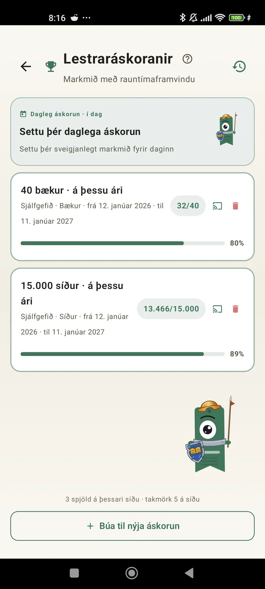

Kynntu þér sjálfan þig sem lesanda
Áskoranir, bingó, græjur og fleiri eiginleikar til að fá sem mest út úr lestrinum. Nýtt í 3.7: græjur fyrir áskoranir og bingó.

Lestraráskoranir
Settu þér markmið eftir blaðsíðum, runum eða bókmenntagreinum. Allt að 15 virkar áskoranir ókeypis, ótakmarkað með Pro. Auk þess sérsniðin dagleg áskorun sem telst ekki með í hámarkinu.

Dagleg áskorun
Nýtt markmið á hverjum degi. Kláraðu áskorunina fyrir miðnætti til að halda rununni gangandi.

Lestrarbingó
Tvö ný bingó í hverjum mánuði með þemareitum. Kláraðu raðir, dálka eða allt spjaldið.

Vikuyfirlit
Á hverjum mánudegi, yfirlit yfir vikuna þína: lesnar blaðsíður, heildartími, runa og samanburður við vikuna á undan.

Mánaðaryfirlit
Þegar mánuðurinn er liðinn tekur Lecturameter hann saman: blaðsíður, tími, kláraðar bækur, hraðinn þinn dag fyrir dag og bók mánaðarins.

Bingógræja Pro
Bingóspjald mánaðarins, alltaf fyrir augum, með reitunum sem þú hefur klárað og línunum sem þú hefur náð.

Bókargræja Ókeypis
Sjáðu bókina sem þú ert að lesa beint á heimaskjánum: kápa, titill, höfundur, blaðsíður og hlutfall framvindu, alltaf uppfært. Stærðanleg svo hún passi hvar sem þú vilt.
Í alvöru, félagi, forritið er eins og meðferð. Ég hef farið úr því að lesa nokkrar blaðsíður á dag í svona 20 blaðsíður á dag og er enn að bæta migUmsögn notanda, send í tölvupósti

Mánaðarsamanburður Pro
Fljótlegt yfirlit yfir síðustu mánuði án þess að opna forritið. Súlur fyrir blaðsíður hvers mánaðar með núverandi mánuð auðkenndan, svo þú sérð strax hvort þér gengur betur eða verr en í síðasta mánuði.

Áskoranagræja Pro
Virku áskoranirnar þínar og framvinda þeirra á heimaskjánum. Veldu hverjar á að sýna á Áskoranaskjánum.